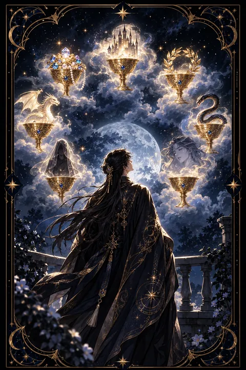

이 게시물은 쿠팡 파트너스 활동의 일환으로, 이에 따른 일정액의 수수료를 제공받습니다.


컵 7 카드 — 환상과 여러 갈래의 선택
컵 7 카드 한눈에 보기
컵 7 카드 상징 읽기

동네보살의 카드 그림은 전통 라이더–웨이트 덱의 뜻을 새 그림으로 옮긴 것입니다. 아래 상징 설명은 전통 덱의 그림을 기준으로 합니다.
검은 그림자로 그려진 인물이 구름 위에 떠 있는 일곱 개의 잔을 바라보고 있습니다. 인물이 뒷모습의 실루엣으로만 표현된 것은 눈앞의 광경에 압도되어 스스로를 잃은 상태, 혹은 누구나 이 자리에 설 수 있다는 뜻을 담고 있습니다.
잔마다 서로 다른 환영이 담겨 있습니다. 성은 안정과 성공, 보석은 재물, 월계관은 승리와 명예를 뜻합니다. 반면 용은 두려움이나 강한 욕망, 뱀은 유혹과 질투를 상징합니다. 천을 덮어쓴 빛나는 형체는 아직 드러나지 않은 진실이나 영적인 깨달음이며 사람의 얼굴은 사랑이나 관계에 거는 기대로 풀이됩니다.
이 모든 잔이 구름 위에 떠 있다는 것이 핵심입니다. 구름은 실체 없는 상상과 공상을 뜻하므로 눈앞의 선택지 가운데 많은 것이 아직 현실이 아니라는 경고입니다. 선택지가 풍부해 보일수록 무엇이 진짜인지 가려내는 분별이 필요하다는 것을 이 카드는 말해 줍니다.
컵 7 카드 정방향 뜻
정방향 컵 7은 눈앞에 여러 선택지가 펼쳐져 있지만 그중 무엇이 진짜인지 가려내기 어려운 상태를 뜻합니다. 이직, 연애, 진로처럼 중요한 결정을 앞두고 이것저것 상상만 커지며 결정을 미루게 되는 흐름입니다.
이 카드는 꿈과 상상력 자체를 부정하지 않습니다. 원하는 미래를 그려 보는 일은 방향을 찾는 데 도움이 됩니다. 다만 상상이 구체적인 계획으로 이어지지 않으면 구름 위의 잔처럼 손에 잡히지 않는다는 점을 경고합니다. 지나치게 좋은 조건이나 달콤한 말로 다가오는 제안은 환상일 가능성이 높으니 신중해야 합니다.
선택지가 많다면 종이에 적어 하나씩 현실성을 따져 보세요. 선택지마다 지금 당장 시작할 수 있는 행동이 있는지 확인하면 진짜와 환상이 구분됩니다. 모든 가능성을 붙잡으려 하기보다 하나를 골라 집중할 때 비로소 꿈이 현실의 모양을 갖추게 됩니다.
컵 7 카드 역방향 뜻
역방향 컵 7은 환상에서 깨어나 현실을 또렷하게 바라보게 되는 흐름을 뜻합니다. 구름이 걷히면서 그럴듯해 보였던 선택지의 실체가 드러나고 정말 원하는 것이 무엇인지 분명해지는 때입니다. 오래 미뤄 온 결정을 내리고 한 방향으로 걸음을 옮길 힘이 생깁니다.
기대했던 것이 생각보다 초라해 보여 잠시 실망할 수 있지만 그 실망은 헛된 곳에 쓰일 시간과 에너지를 아껴 주는 값진 깨달음입니다. 집중할 대상이 정해지면서 일의 진행 속도도 빨라집니다.
다만 선택지가 너무 많아 아예 판단을 포기하거나 현실을 외면한 채 공상 속으로 더 깊이 숨어드는 모습으로 읽힐 때도 있습니다. 결정이 어렵다면 마감 기한을 정하고 믿을 만한 사람에게 의견을 구해 보세요. 작은 결정 하나를 내리는 경험이 다음 선택을 훨씬 수월하게 만들어 줍니다.
연애에서 컵 7 카드
솔로라면 여러 사람 사이에서 마음이 흔들리거나 이상형을 너무 높게 그려 현실의 인연을 놓치기 쉬운 시기입니다. 겉으로 보이는 조건이나 첫인상에만 끌리지 말고 실제로 대화가 통하는지 차분히 확인해 보세요.
연애 중이라면 상대를 있는 그대로 보기보다 자신이 바라는 모습으로 그려 놓고 있지 않은지 돌아볼 때입니다. 기대와 현실의 차이에서 서운함이 생기기 쉬우니 원하는 것을 구체적으로 이야기하는 편이 좋습니다. 다른 사람에게 눈길이 가는 유혹도 경계해야 합니다.
역방향이라면 환상이 걷히고 관계를 현실적으로 바라보게 되는 흐름입니다. 조금 실망스러운 부분이 보여도 그것을 받아들일 때 오히려 관계가 단단해지고 진짜 마음이 향하는 사람을 분명히 알게 됩니다.
재회·속마음 질문에서 컵 7 카드
재회를 묻는 자리에서 컵 7이 나오면 지난 관계를 실제보다 아름답게 기억하고 있을 가능성을 먼저 살펴야 합니다. 그리움이 커지면서 헤어진 이유는 흐려지고 좋았던 장면만 크게 떠오르는 상태일 수 있습니다. 상대 역시 여러 가능성 사이에서 마음을 정하지 못한 흐름입니다. 막연한 기대로 움직이기보다 다시 만났을 때 무엇이 달라질 수 있는지 현실적으로 따져 보세요. 역방향이라면 마음속 안개가 걷혀 재회 여부를 분명하게 판단할 수 있게 됩니다. 결정을 내리기 전에 다시 만났을 때 서로 바꿔야 할 점을 목록으로 적어 보면 판단이 선명해집니다. 환상이 아닌 사실 위에서 고른 선택이 후회를 줄여 줍니다.
일·금전에서 컵 7 카드
일에서는 여러 기회와 제안 사이에서 고민하는 시기를 나타냅니다. 이직 제안, 새로운 사업 아이디어, 여러 프로젝트가 동시에 눈앞에 놓여 무엇을 골라야 할지 망설여집니다. 조건을 표로 정리해 비교하고 겉만 화려한 제안은 한 번 더 확인하는 것이 좋습니다.
주머니 사정을 보면 쉽게 큰돈을 벌 수 있다는 말에 흔들리기 쉬운 때입니다. 확인되지 않은 기대에 돈을 걸기보다 현실적인 지출 계획을 세우세요. 역방향이라면 우선순위가 분명해져 일에 속도가 붙는 흐름입니다. 결정을 미루는 동안 기회가 저절로 사라지기도 하니 판단의 기한을 정해 두는 것이 좋습니다. 한 가지를 고른 뒤에는 흔들리지 말고 끝까지 밀고 가 보세요.
컵 7 카드는 예일까 아니오일까
보기 좋은 선택지가 많지만 그중 상당수가 환상이라는 카드라 지금은 확실한 예라고 말하기 어렵습니다. 현실을 따져 하나를 고른다면 가능성이 생기는 조건부이며 역방향은 결단이 서는 흐름입니다.
자주 묻는 질문
컵 7 카드 역방향은 나쁜 뜻인가요?
역방향 컵 7은 환상에서 깨어나 현실을 또렷하게 바라보게 되는 흐름을 뜻합니다. 구름이 걷히면서 그럴듯해 보였던 선택지의 실체가 드러나고 정말 원하는 것이 무엇인지 분명해지는 때입니다. 오래 미뤄 온 결정을 내리고 한 방향으로 걸음을 옮길 힘이 생깁니다.
컵 7 카드가 연애 질문에 나오면요?
솔로라면 여러 사람 사이에서 마음이 흔들리거나 이상형을 너무 높게 그려 현실의 인연을 놓치기 쉬운 시기입니다. 겉으로 보이는 조건이나 첫인상에만 끌리지 말고 실제로 대화가 통하는지 차분히 확인해 보세요.
타로 카드는 어떻게 뽑나요?
타로 카드 페이지에서 78장을 섞으면 그중 22장이 펼쳐집니다. 마음이 가는 세 장을 고르면 과거·현재·미래 자리에 놓이고, 한 장씩 뒤집어 자리와 방향에 맞는 풀이를 읽습니다. 정방향과 역방향은 섞는 순간 정해집니다.